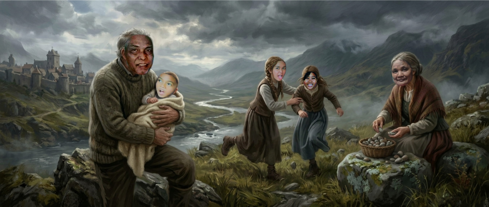

Ako si Tristan Paul T. Donato, labingwalong taong gulang, isang simpleng estudyante sa kolehiyo na may kulot na buhok, kayumangging balat, at payat na pangangatawan. Hindi ako ang tipo ng taong mapapalingon ka sa unang tingin, pero sabi nga nila, hindi kailangang maging may itsura para maging bida—kailangan lang ng konting talino, magandang sense of humor, at matinding kapal ng mukha. Charot!
Lumaki ako sa piling ng aking mga lolo at lola, na siyang naging sandigan ko sa mundong hindi palaging mabait. Mahilig akong maglaro ng volleyball, mag-online games, at manood ng mga drama—lalo na kapag kailangan ko ng pahinga mula sa magulong buhay-estudyante. Bata pa lamang ako, natutuhan ko nang magsikap. Nagbenta ako ng mga pagkain upang makatulong sa aming gastusin, kahit may mga taong nangutya sa akin dahil sa aking pagkatao at pagiging bakla. Ngunit sa kabila ng lahat, pinili kong ngumiti at magpatuloy.
Akala ko, ang pinakamalaking problema ko na ay ang mga bayarin sa kolehiyo at mga taong mahilig manghusga.
TO BE CONTINUED